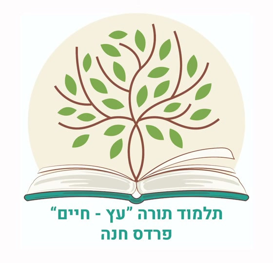

בהיר, צומח ואישי
עיצוב צילומי נקי עם תמונת גיבור גדולה, צבעי טבע ומרווח נשימה נדיב.
פתיחת ההצעה←
כל הצעה היא מיני־אתר עצמאי עם ארבעה עמודים וניווט אמיתי.
עיצוב צילומי נקי עם תמונת גיבור גדולה, צבעי טבע ומרווח נשימה נדיב.
פתיחת ההצעה←כיוון שקט ומעודן שמושפע מספר יהודי מודפס, עם קלף, ירוק יער וחמרה.
פתיחת ההצעה←שפה עכשווית, משפחתית ואופטימית עם חלונות תמונה מעוגלים וצבעוניות רכה.
פתיחת ההצעה←מבנה של דף לימוד אמיתי — טור מרכזי מוקף "רש״י" ו"תוספות", יין וזהב על קלף, כותרות פרקים במקום כותרות אתר.
פתיחת ההצעה←האתר נפתח כמו מגילה בין שני גלילי עץ, עם עץ חיים מצויר שגדל בשוליים ופרקים ממוספרים באותיות גימטריה.
פתיחת ההצעה←שולחן לימוד מוחשי — ספר פתוח כהירו, ניווט בצורת סימניות בד, פינות פליז וכחול־לילה עמוק במקום טורקיז.
פתיחת ההצעה←הגיבור בנוי מבועות תמונה עגולות שמצטברות כמו פירות וענפים, עם קווי ענף מנוקדים, טבעות דקורטיביות וסרטון בתוך מסגרת עיגול.
פתיחת ההצעה←עיצוב פוסטר שטוח בהשראת כרזות עבריות ישנות — כתום, כחול־נייבי וחרדל, קווי מתאר עבים, צללי אופסט וסמל עץ גיאומטרי.
פתיחת ההצעה←שחור־לבן חד, טיפוגרפיה מסוגננת כמו אבן חקוקה, סמל חותם עגול, ואדום חותמת יחיד כנקודת מבט — כיוון מינימליסטי וחגיגי.
פתיחת ההצעה←